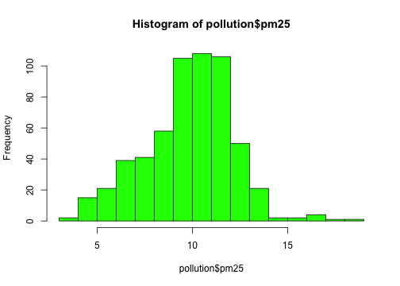
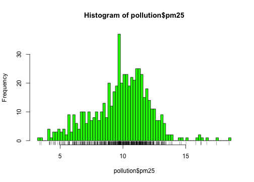
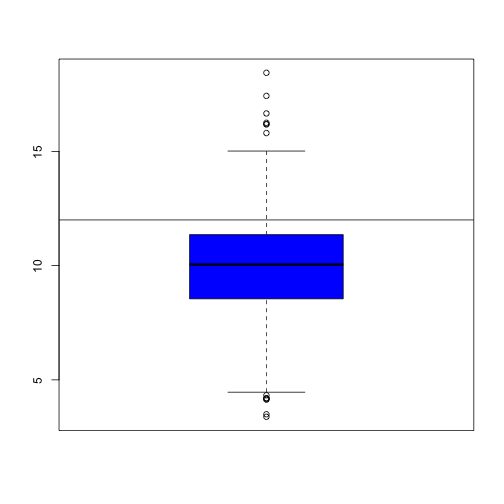
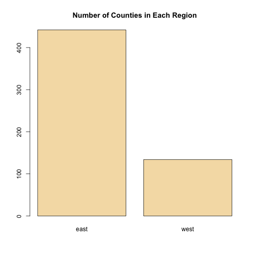
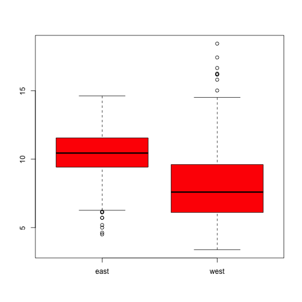
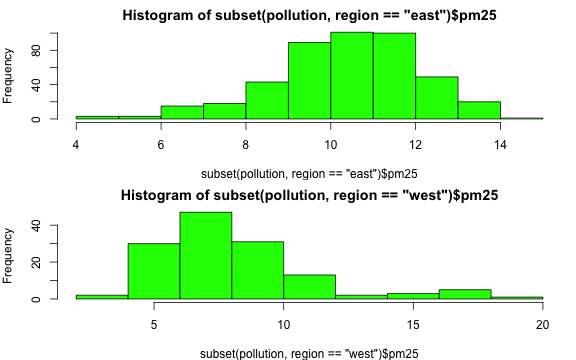
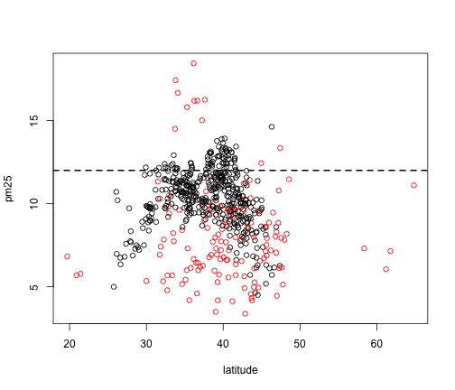

- To understand data properties
- To find patterns in data
- To suggest modeling strategies
- To "debug" analyses
- To communicate results
Exploratory Graphs
Roger D. Peng, Associate Professor of Biostatistics
Johns Hopkins Bloomberg School of Public Health
Why do we use graphs in data analysis?
Exploratory graphs
To understand data properties To find patterns in data To suggest modeling strategies To "debug" analyses - To communicate results
Characteristics of exploratory graphs
- They are made quickly
- A large number are made
- The goal is for personal understanding
- Axes/legends are generally cleaned up (later)
- Color/size are primarily used for information
Air Pollution in the United States
The U.S. Environmental Protection Agency (EPA) sets national ambient air quality standards for outdoor air pollution
For fine particle pollution (PM2.5), the "annual mean, averaged over 3 years" cannot exceed \(12~\mu g/m^3\).
Data on daily PM2.5 are available from the U.S. EPA web site
Question: Are there any counties in the U.S. that exceed that national standard for fine particle pollution?
Data
Annual average PM2.5 averaged over the period 2008 through 2010
pollution <- read.csv("data/avgpm25.csv", colClasses = c("numeric", "character",
"factor", "numeric", "numeric"))
head(pollution)
## pm25 fips region longitude latitude
## 1 9.771 01003 east -87.75 30.59
## 2 9.994 01027 east -85.84 33.27
## 3 10.689 01033 east -87.73 34.73
## 4 11.337 01049 east -85.80 34.46
## 5 12.120 01055 east -86.03 34.02
## 6 10.828 01069 east -85.35 31.19
Do any counties exceed the standard of \(12~\mu g/m^3\)?
Simple Summaries of Data
One dimension
- Five-number summary
- Boxplots
- Histograms
- Density plot
- Barplot
Five Number Summary
summary(pollution$pm25)
## Min. 1st Qu. Median Mean 3rd Qu. Max.
## 3.38 8.55 10.00 9.84 11.40 18.40
Boxplot
boxplot(pollution$pm25, col = "blue")

Histogram
hist(pollution$pm25, col = "green")

Histogram
hist(pollution$pm25, col = "green")
rug(pollution$pm25)
Histogram
hist(pollution$pm25, col = "green", breaks = 100)
rug(pollution$pm25)

Overlaying Features
boxplot(pollution$pm25, col = "blue")
abline(h = 12)

Overlaying Features
hist(pollution$pm25, col = "green")
abline(v = 12, lwd = 2)
abline(v = median(pollution$pm25), col = "magenta", lwd = 4)
Barplot
barplot(table(pollution$region), col = "wheat", main = "Number of Counties in Each Region")

Simple Summaries of Data
Two dimensions
- Multiple/overlayed 1-D plots (Lattice/ggplot2)
- Scatterplots
- Smooth scatterplots
\(> 2\) dimensions
- Overlayed/multiple 2-D plots; coplots
- Use color, size, shape to add dimensions
- Spinning plots
- Actual 3-D plots (not that useful)
Multiple Boxplots
boxplot(pm25 ~ region, data = pollution, col = "red")

Multiple Histograms
par(mfrow = c(2, 1), mar = c(4, 4, 2, 1))
hist(subset(pollution, region == "east")$pm25, col = "green")
hist(subset(pollution, region == "west")$pm25, col = "green")

Scatterplot
with(pollution, plot(latitude, pm25))
abline(h = 12, lwd = 2, lty = 2)
Scatterplot - Using Color
with(pollution, plot(latitude, pm25, col = region))
abline(h = 12, lwd = 2, lty = 2)

Multiple Scatterplots
par(mfrow = c(1, 2), mar = c(5, 4, 2, 1))
with(subset(pollution, region == "west"), plot(latitude, pm25, main = "West"))
with(subset(pollution, region == "east"), plot(latitude, pm25, main = "East"))
Summary
Exploratory plots are "quick and dirty"
Let you summarize the data (usually graphically) and highlight any broad features
Explore basic questions and hypotheses (and perhaps rule them out)
Suggest modeling strategies for the "next step"